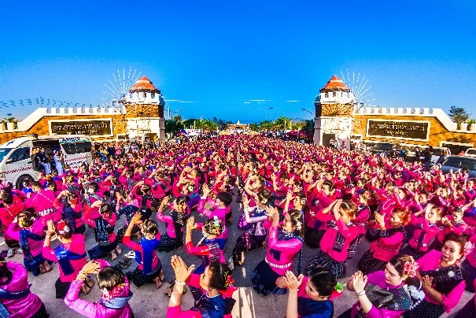
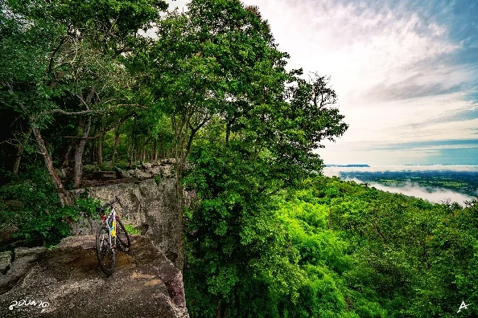
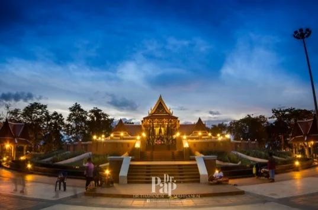
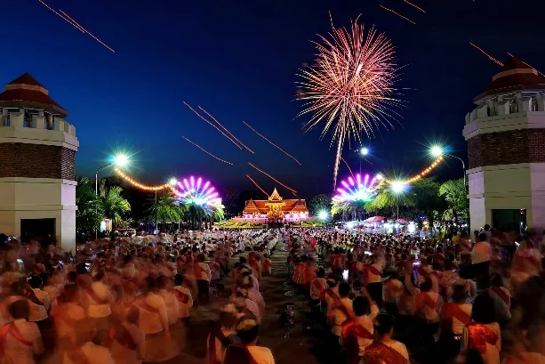

อาหารกลางวัน + การเรียนรู้ปศุสัตว์
ครู นักเรียน และผู้ปกครองรวม 1,200 ราย



จากเกษตรมูลค่าสูง เมืองผ้า คุณภาพชีวิต การท่องเที่ยว ไปจนถึงทรัพยากรธรรมชาติ — รวมผลการดำเนินงานสำคัญของจังหวัดไว้ในประสบการณ์ดิจิทัลเดียว
ครู นักเรียน และผู้ปกครองรวม 1,200 ราย
ยอดจำหน่ายมากกว่า 2 ล้านบาท
เงินหมุนเวียนประมาณ 3 ล้านบาท
ยอดจำหน่ายผลิตภัณฑ์ของผู้ประกอบการจังหวัด
เสริมศักยภาพอนุรักษ์ ฟื้นฟู และป้องกันไฟป่า
ต้นทุนของหนองบัวลำภูไม่ได้อยู่แค่ในตัวเลข แต่ยังอยู่ในภูมิทัศน์ ศาสนสถาน วิถีชุมชน และอัตลักษณ์ทางวัฒนธรรมที่ต่อยอดสู่เศรษฐกิจสร้างสรรค์ได้
สำรวจจังหวัด →

